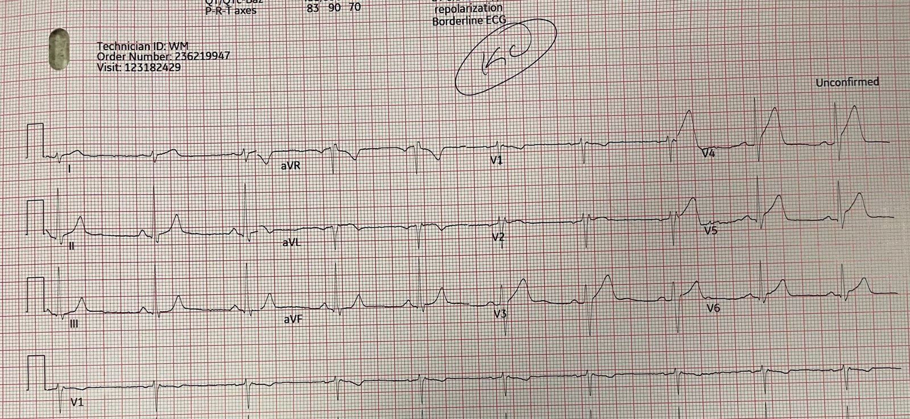
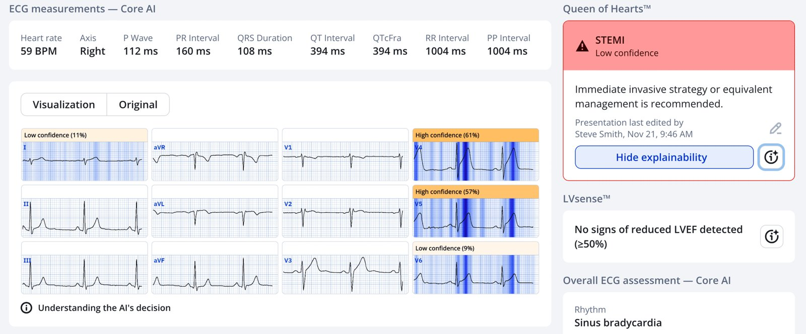
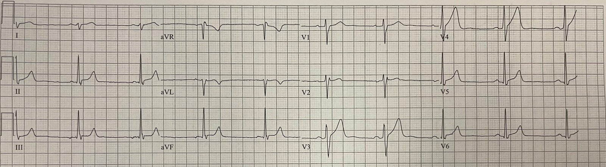
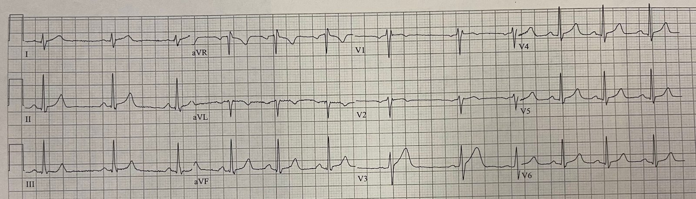
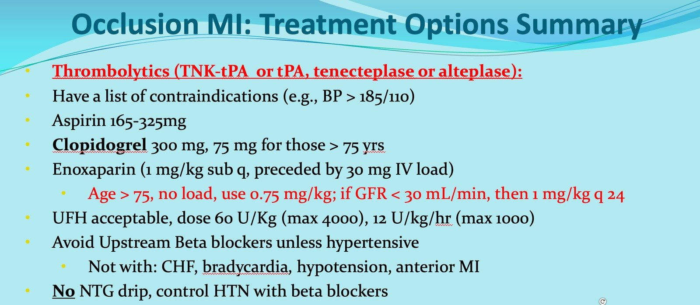
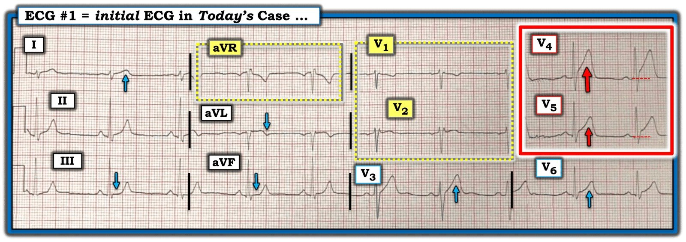

09/12/2025 — Xem sóng T tối cấp “phồng căng” xẹp xuống sau tiêu sợi huyết
Bản dịch tiếng Việt của bài "See Inflated Hyperacute T-waves deflate after thrombolytics" – Dr. Smith’s ECG Blog. Giữ nguyên toàn bộ 6 hình ảnh của bản gốc.
Bản ghi này được gửi cho tôi mà không kèm thông tin gì (mãi đến sau này).


Thuật toán máy tính thông thường kết luận “Tái cực sớm”. Bác sĩ tim mạch đọc lại (overread) cũng kết luận “Tái cực sớm.”
Bạn nghĩ sao?
Chẩn đoán xác định tắc LAD. Có ST chênh lên (STE) đáng kể và sóng T tối cấp, “phồng căng” ở V3-V6. Hơn nữa, đây rõ ràng là một OMI STEMI (+); ST chênh lên 3 mm ở V3 và 2mm ở V5: đạt tiêu chuẩn STEMI dựa trên milimét. Người ta sẽ nghĩ rằng OMI đạt tiêu chuẩn STEMI hẳn phải được các bác sĩ chẩn đoán dễ dàng. Có rất ít dữ liệu tốt về vấn đề này, nhưng bằng chứng giai thoại cho thấy RẤT NHIỀU ca OMI đạt tiêu chuẩn STEMI bị chẩn đoán là tái cực sớm
Đây là bệnh sử:
Nam 48 tuổi, hút thuốc lá, nặng 135 pound, đang nhảy múa, biểu diễn thì bị đau ngực (CP) điển hình, vã mồ hôi, đến viện 45 phút sau khi khởi phát đau ngực. Đau giảm từ 8/10 –> 4/10 sau dùng nitro.
Người gửi lập tức chẩn đoán OMI do tắc LAD.
Sau đó tôi đưa bản ghi này qua PMCardio Queen of Hearts. Hiển nhiên Queen không gặp khó khăn gì với điện tâm đồ này:


PMcardio for Individuals hiện đã có mô hình Queen of Hearts mới nhất, khả năng giải thích của AI (bản đồ nhiệt màu xanh) và %LV phân suất tống máu thất trái. Tải ngay cho iOS hoặc Android: https://individuals.pmcardio.com/app/promo?code=DRSMITH20. Là thành viên cộng đồng của chúng tôi, bạn có thể dùng mã DRSMITH20 để được giảm giá độc quyền 20% cho năm đầu tiên của gói đăng ký hằng năm. Tuyên bố miễn trừ: Một số Mô-đun ECG AI là thiết bị y tế mang dấu CE theo EU MDR và chỉ được chứng nhận lưu hành tại Liên minh Châu Âu và Vương quốc Anh. Công nghệ PMcardio chưa được Cục Quản lý Thực phẩm và Dược phẩm Hoa Kỳ (FDA) cấp phép sử dụng lâm sàng tại Hoa Kỳ.
Người gửi không làm việc tại trung tâm có PCI. Thời gian vận chuyển kéo dài, nên anh ấy buộc phải dùng thuốc tiêu sợi huyết cho OMI.
Người gửi lập tức dùng TNK-tPA với thời gian từ cửa đến thuốc là 14 phút. Sau tiêu sợi huyết, cơn đau hết hoàn toàn trong vòng vài phút.
Đây là điện tâm đồ ghi 19 phút sau khi dùng thuốc tiêu sợi huyết:


Bản ghi này cho thấy tái tưới máu. Giờ thì bạn thực sự có thể chẩn đoán “tái cực sớm” nếu nhìn bản ghi này một cách riêng lẻ!! (Thật vậy, Queen kết luận “Không phải OMI” với độ chắc chắn tuyệt đối). Những chỗ trước đây có ST chênh lên thì nay đã giảm: ở V4, từ 3mm xuống 1mm; ở V5, từ 2mm xuống 0.5mm; ở V6, từ 1 mm xuống 0.5mm. Ngoài ra, sóng T không còn “béo” như trước (không còn tối cấp).
Một điện tâm đồ khác được ghi 11 phút sau đó, tức 30 phút sau TNK:


Giờ ST chênh lên ở chuyển đạo V3 giảm thêm một chút. Sóng T nhỏ hơn nhiều (biên độ thấp hơn, diện tích dưới đường cong nhỏ hơn nhiều, kém đối xứng hơn). Những sóng T tối cấp “phồng căng” trên điện tâm đồ đầu tiên nay đã “xẹp xuống”.
Kết quả troponin I đầu tiên là 0.082 ng/mL.
“PCI cứu vãn” (rescue PCI) sau tiêu sợi huyết thất bại được thực hiện nếu không có bằng chứng tốt về tái tưới máu. Điện tâm đồ chính là bằng chứng. Nếu ST chênh lên giảm >70%, đó được xem là tái tưới máu chắc chắn.
Theo Open Evidence: Ngưỡng này được nhiều nghiên cứu và guideline ủng hộ, cho thấy đoạn ST trở về hoàn toàn (≥70%) là chỉ dấu đáng tin cậy của tái tưới máu cơ tim thành công và đi kèm kết cục tốt hơn.[1-3] Đoạn ST trở về một phần (30–70%) hoặc không trở về (<30%) cho thấy tái tưới máu không hoàn toàn hoặc thất bại, và đi kèm kích thước ổ nhồi máu lớn hơn cùng tiên lượng xấu hơn.[3] Guideline của Trường Môn Tim mạch Hoa Kỳ/Hội Tim mạch Hoa Kỳ khuyến cáo PCI cứu vãn ở bệnh nhân STEMI có bằng chứng tái tưới máu thất bại sau điều trị tiêu sợi huyết, mà thường nhất được xác định bằng ST chênh lên dai dẳng và triệu chứng còn tiếp diễn.[4]
Ngoài lề: khi dùng TNK-tPA, cũng nên cho 300mg clopidogrel. Enoxaparin là thuốc chống đông được ưu tiên, và được dùng kèm liều nạp tĩnh mạch (giảm liều nếu tuổi > 75). Xem bản tóm tắt đầy đủ tại đây:


Ở giai đoạn sớm sau khi tắc, huyết khối còn mới và thuốc tiêu sợi huyết RẤT hiệu quả. Một số nghiên cứu cho rằng chúng hiệu quả hơn PCI trong một đến hai giờ đầu. Tuy vậy, các guideline luôn khuyến cáo PCI nếu thời gian vào cửa–ra cửa, rồi vào cửa đến bóng dưới 90 phút, hoặc nếu thời gian từ lần tiếp xúc y tế đầu tiên của đội cấp cứu ngoài viện (EMS) đến bóng dưới 120 phút. Điều này phần lớn là do nguy cơ xuất huyết nội sọ khi dùng thuốc tiêu sợi huyết, ít nhất là 1% ngay cả ở nhóm nguy cơ thấp nhất.
Những khoảng thời gian ngắn như vậy hầu như không bao giờ đạt được ở bất kỳ hệ thống chuyển viện nào, vì vậy hãy nghiêng về phía dùng thuốc tiêu sợi huyết nếu bạn cần chuyển viện.
Xem thử nghiệm CAPTIM bên dưới để biết dữ liệu về tiêu sợi huyết sớm sau khởi phát đau ngực
Theo dõi:
Vì đã có tái tưới máu, PCI có thể được thực hiện vào ngày hôm sau
Có hẹp 50% LAD, kèm huyết khối, được điều trị nội khoa.
Điều này gợi ra một cuộc tranh luận thú vị khác: phải chăng phần lớn nhồi máu cơ tim xảy ra ở những tổn thương hẹp <50% lúc ban đầu? Nhiều nghiên cứu cũ hơn ghi nhận điều này, nhưng dữ liệu gần đây hơn cho thấy tổn thương xơ vữa tiến triển nhanh trong những tháng trước OMI, đến mức khoảng 84% hẹp >50% vào thời điểm chúng nứt vỡ và hình thành huyết khối. Nhưng điều đó cũng có nghĩa là 16% hẹp <50%.
Thử nghiệm CAPTIM trên Circulation 2003:
Steg PG, Bonnefoy E, Chabaud S, và cs. Impact of time to treatment on mortality after prehospital fibrinolysis or primary angioplasty: data from the CAPTIM randomized clinical trial. Circulation [Internet] 2003;108(23):2851–6. Toàn văn: https://www.ahajournals.org/doi/pdf/10.1161/01.cir.0000103122.10021.f2
Bối cảnh—CAPTIM là một thử nghiệm ngẫu nhiên so sánh tiêu sợi huyết trước viện kèm chuyển tới cơ sở có can thiệp (và can thiệp qua da nếu cần) với can thiệp mạch vành qua da (PCI) tiên phát ở bệnh nhân nhồi máu cơ tim có ST chênh lên (STEMI). Vì lợi ích của tiêu sợi huyết đạt tối đa trong 2 giờ đầu sau khởi phát triệu chứng, và vì tiêu sợi huyết trước viện có thể thực hiện sớm hơn PCI, phân tích này khảo sát mối liên quan giữa hiệu quả của điều trị được phân bổ và thời gian trôi qua kể từ khi khởi phát triệu chứng.
Phương pháp và Kết quả—Việc phân nhóm ngẫu nhiên trong vòng 2 giờ (n460) hay sau 2 giờ (n374) kể từ khởi phát triệu chứng không ảnh hưởng đến hiệu quả điều trị trên tiêu chí chính gộp tại 30 ngày gồm tử vong, tái nhồi máu không tử vong và đột quỵ gây tàn phế. Tuy nhiên, bệnh nhân được phân nhóm ngẫu nhiên <2 giờ sau khởi phát triệu chứng có xu hướng rõ rệt giảm tử vong 30 ngày với tiêu sợi huyết trước viện so với nhóm được phân vào PCI tiên phát (2.2% so với 5.7%, P=0.058), trong khi tử vong tương đương ở bệnh nhân được phân nhóm >2 giờ (5.9% so với 3.7%, P=0.47). Có tương tác có ý nghĩa giữa hiệu quả điều trị và thời gian chậm trễ đối với tử vong 30 ngày (tỷ số nguy cơ 4.19, 95% CI 1.033 đến 17.004, P0.045). Trong số bệnh nhân được phân nhóm ngẫu nhiên trong 2 giờ đầu, sốc tim ít gặp hơn với điều trị tiêu sợi huyết so với PCI tiên phát (1.3% so với 5.3%, P0.032), trong khi tỷ lệ tương đương ở bệnh nhân được phân nhóm muộn hơn.
Kết luận—Thời gian từ khi khởi phát triệu chứng cần được cân nhắc khi lựa chọn liệu pháp tái tưới máu trong STEMI. Tiêu sợi huyết trước viện có thể được ưu tiên hơn PCI tiên phát ở bệnh nhân được điều trị trong 2 giờ đầu sau khởi phát triệu chứng. (Circulation. 2003;108:2851-2856.)
Như vậy nghiên cứu này không đủ lực thống kê để chứng minh thuốc tiêu sợi huyết tốt hơn PCI nếu được dùng rất sớm sau khởi phát đau ngực.
= = =
======================================
BÌNH LUẬN CỦA TÔI, bởi KEN GRAUER, MD (9/12/2025):
Như Dr. Smith đã nêu — Hướng xử trí trong ca hôm nay có thể (và nên) được quyết định nhanh chóng vì: i) Bệnh sử điển hình cho đau ngực (CP) do tim cấp (Chest Pain); — ii) Trong bối cảnh bệnh sử này, điện tâm đồ ban đầu có giá trị chẩn đoán xác định một OMI cấp; — và, iii) Không có PCI kịp thời trong khu vực nơi bệnh nhân này đến khám — do đó nhanh chóng tiến hành điều trị tiêu sợi huyết là giải pháp thay thế thích hợp cần được thực hiện ngay lập tức.
= = =
Vì sao điện tâm đồ Ban đầu hôm nay có giá trị Chẩn đoán xác định một OMI Cấp?
Để dễ theo dõi, trong Hình 1 — tôi đã sao lại và đánh dấu điện tâm đồ ban đầu của ca hôm nay.
- Ở người đàn ông trung niên đến khám vì đau ngực điển hình mới khởi phát này — “mắt” tôi lập tức bị hút về chuyển đạo V4 (trong hình chữ nhật ĐỎ). Không chỉ có ST chênh lên ít nhất 2 mm — mà phức bộ ST-T này rõ ràng là tối cấp trong bối cảnh lâm sàng này (cao hơn và “đồ sộ” hơn nhiều so với dự kiến — với đáy cực kỳ rộng).
- Sóng T ở chuyển đạo V5 kế cận (cũng nằm trong hình chữ nhật ĐỎ ở Hình 1) không cao bằng ở chuyển đạo V4 — nhưng ngoài ra vẫn biểu hiện các đặc điểm tối cấp tương tự: đoạn ST thẳng đuỗn và chênh lên, với đáy sóng T “béo” hơn dự kiến và cũng rộng ra tương tự.
- Với những bất thường rõ ràng ở V4,V5 như vậy — các chuyển đạo kế cận V3 và V6 biểu hiện các đặc điểm tối cấp nhẹ hơn, nhưng vẫn là tối cấp (tức là, sóng T “đồ sộ” ở chuyển đạo V3 lấn át hẳn sóng R ở chuyển đạo này).
- LƯU Ý: Điện cực V1 và V2 gần như chắc chắn đã bị đặt quá cao trên thành ngực vì: i) Cả hai chuyển đạo này đều có r’ tận (điều ít gặp ở V1 và rất bất thường ở chuyển đạo V2); — ii) Cả V1 và V2 đều có phần cuối sóng P âm; — và, iii) Hình dạng QRS ở cả V1 và V2 giống hình dạng QRS ở chuyển đạo aVR. Ngoài ra — sóng T ở chuyển đạo V1 âm — và lý do duy nhất khiến sóng T ở V2 không âm là vì chắc chắn ở đây vẫn đang tiếp nối ST chênh lên tối cấp mà ta thấy ở các chuyển đạo V3 đến V6 (Xem trang của chúng tôi về Technical Misadventures để có nhiều ví dụ về đặt sai vị trí điện cực V1,V2).
- Lý do việc nhận ra V1,V2 bị đặt sai vị trí có ý nghĩa trong ca hôm nay là vì ta thấy sóng T tối cấp bắt đầu từ chuyển đạo V3. Tôi rất nghi ngờ rằng nếu đặt V1,V2 đúng vị trí — ST chênh lên phù hợp với tắc đoạn gần LAD cấp cũng sẽ thấy được ở V1,V2.
- Cuối cùng — các dấu hiệu ST-T tinh tế nhưng có thật cũng thấy ở các chuyển đạo chi (sóng T tối cấp ở chuyển đạo I, xét đến việc QRS [và đặc biệt là sóng R] ở chuyển đạo I nhỏ đến mức nào — ST chênh lên tinh tế kèm sóng T đảo ngược ở aVL — và ST dẹt ở III,aVF với phần cuối sóng T nhọn ở cả 3 chuyển đạo dưới).
= = =
Hình 1: Điện tâm đồ ban đầu của ca hôm nay.


= = =
= = =